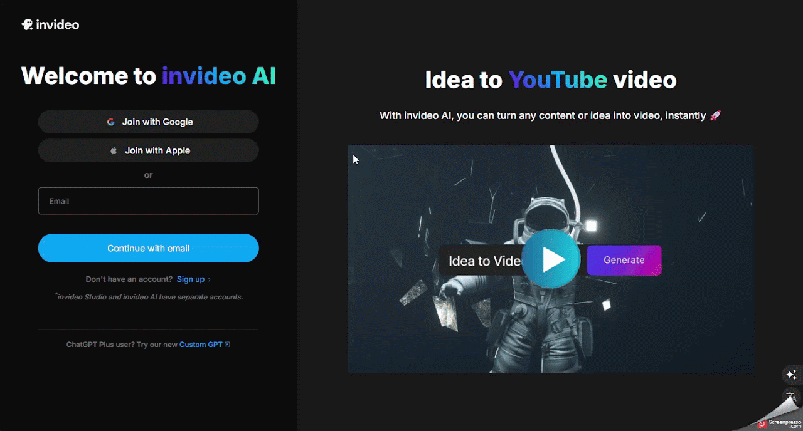
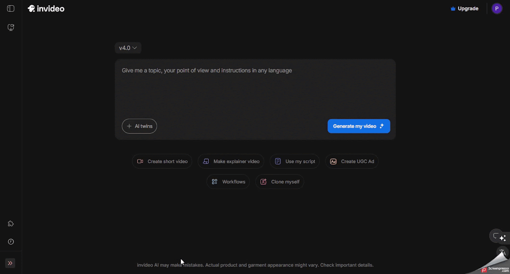
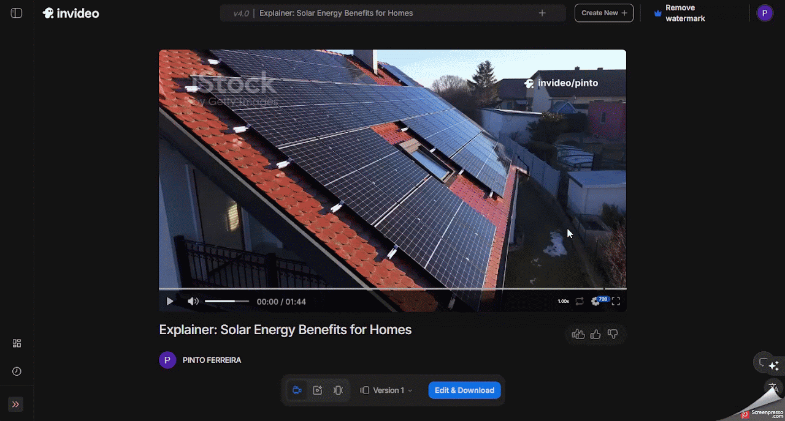

Invideo AI
Apoiar o professor na criação de vídeos educativos e materiais audiovisuais para aulas presenciais ou remotas.
Ficha técnica
Visão geral
O que é o InVideo AI ?
O InVideo AI é uma ferramenta de criação de vídeos baseada em inteligência artificial que permite gerar vídeos a partir de descrições textuais.
Fluxo de uso
Como utilizar o InVideo AI
Etapa 1
Cadastro
- Acesse o site: vá para https://ai.invideo.io/login.
- Crie uma conta: clique em “Sign up” e registre-se usando seu e-mail, conta do Google ou Apple.
- Faça login: após o cadastro, entre na plataforma com suas credenciais.

Etapa 2
Criando um vídeo com IA
- Inicie um novo projeto: clique em “Create AI Video” no painel principal.
- Descreva sua ideia: na caixa de prompt, insira uma descrição detalhada do vídeo que deseja criar.
- Exemplo: “Vídeo explicativo sobre os benefícios da energia solar para residências”.
- Configure as preferências:
- Estilo visual: Escolha o estilo desejado para o vídeo.
- Duração: Defina a duração aproximada do vídeo.
- Plataforma de destino: Selecione onde o vídeo será publicado (YouTube, Instagram, etc.).
- Gere o vídeo: clique em “Generate a video” e aguarde enquanto a IA processa sua solicitação.

Etapa 3
Personalização e edição
- Visualize o vídeo: após a geração, assista ao vídeo para verificar o resultado.
- Edite conforme necessário:
- Editar mídia: Substitua imagens ou videoclipes por outros de sua preferência.
- Editar roteiro: Altere o texto do roteiro, se necessário.
- Comandos de texto: Utilize a caixa de texto para instruir a IA a fazer ajustes específicos, como "aumentar a velocidade da narração" ou "substituir a imagem da introdução".
Etapa 4
Exportação
- Finalize o vídeo: após as edições, clique em “Export” para preparar o vídeo para download.
- Escolha as configurações de exportação:
- Resolução: Selecione a qualidade desejada (por exemplo, 1080p).
- Marca d'água: Na versão gratuita, os vídeos incluem uma marca d'água do InVideo AI. Para removê-la, é necessário assinar um plano pago.
- Baixe ou compartilhe: após a exportação, baixe o vídeo para seu dispositivo ou compartilhe diretamente nas redes sociais.

Boas práticas
Dicas adicionais
- Versão gratuita: permite criar vídeos com marca d'água.
- Planos pagos: oferecem recursos adicionais, como remoção de marca d'água, acesso a mais mídias e opções avançadas de edição.
- Biblioteca de mídia: acesse uma vasta coleção de imagens, vídeos e músicas para enriquecer seus projetos.